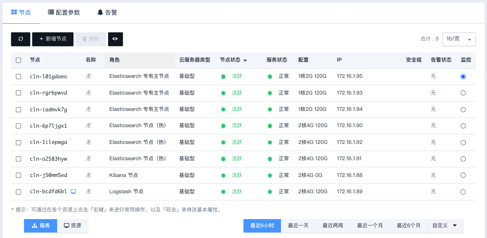
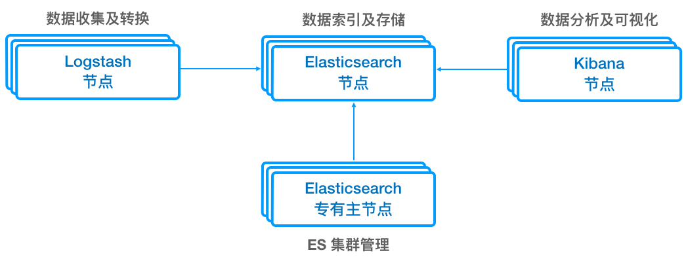
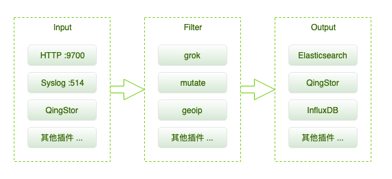
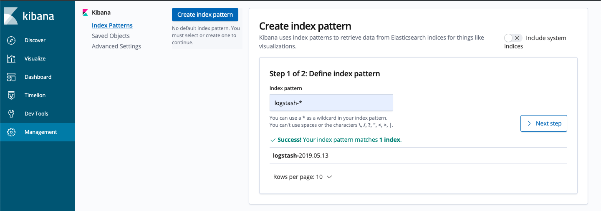

集群信息
集群状态
当 ELK 创建完成之后，可以查看每个节点的节点状态和服务状态。
-
当节点状态显示为
活跃状态，表示该节点启动正常。 -
当每个节点都启动正常后 ELK 集群显示为
活跃状态，服务状态由获取中变为活跃状态，表示可正常使用 ELK 服务。

节点状态
ELK 集群创建成功后，点击集群列表页面相应集群可查看集群详情。可以看到集群分为 Elasticsearch 节点（热、温、冷共三组）、Elasticsearch 专有主节点、Kibana 节点和 Logstash 节点等角色：
- Elasticsearch 节点（热、温、冷共三组）管理所有数据；
- Elasticsearch 专有主节点管理集群状态，生产环境建议配置三个 ES 专有主节点保证 ES 集群的高可用；
- Logstash 节点提供数据收集及实时数据转换处理的能力；
- Kibana 节点提供 Kibana 以及 Cerebro 等 Elasticsearch 可视化管理工具，并且绑定了 VIP 保证 Elasticsearch 服务的高可用。
Elasticsearch 节点可提供远程扩展字典及热更新，Logstash 节点提供用户自定义插件能力，具体使用方法将在下文中详述。

节点使用方法
ELK 提供的是 HTTP RESTful 接口，可以使用很多兼容的工具进行交互。为了方便理解，下文将交叉使用 Kibana Console 语法 和 curl 语法来演示与 ELK 的交互，比如下面两段请求是等价的：
Kibana Console 语法（可通过 Kibana 的 Dev Tools 直接执行）：
GET _search
{
"query": {
"match_all": {}
}
}
curl 语法：
curl -XGET "http://192.168.2.2:9200/_search" -d'
{
"query": {
"match_all": {}
}
}
下文使用的 IP 地址说明如下，请根据实际情况修改：
| 示例 IP 地址 | 相应变量名 | 说明 |
|---|---|---|
| 192.168.2.2 | ES_IP | Elasticsearch 节点 IP |
| 192.168.2.7 | LS_IP | Logstash 节点 IP |
| 192.168.2.9 | KB_IP | Kibana 节点 IP |
在运行下面涉及到的脚本前，需要先在 Shell 中设置相应节点的 IP：
ES_IP=192.168.2.2
LS_IP=192.168.2.7
KB_IP=192.168.2.9
Elasticsearch 基本用法
Elasticsearch 用索引（index）来组织数据，用户向 Elasticsearch 发送数据时需要指定目标索引，比如如下命令把数据（访问日志）以 JSON 格式发送到了名为 access-log-2019.05.13 的索引（索引名称可根据实际情况指定）：
说明：
Elasticsearch 从 6.x 版本起，新创建的 index 不再支持多 mapping types（在老版本创建的可以在 6.x 版本继续使用），官方建议使用
_doc作为唯一的 mapping type，更多详情请查阅 官方说明；如果是 5.x 版本，mapping type 不能以下划线开头，需要把下面的_doc改成doc或者其他任意名称。
POST access-log-2019.05.13/_doc
{
"from": "10.10.10.10",
"success": true
}
从 Elasticsearch 查询数据时也需要指定目标索引，比如如下命令从名为 access-log-2019.05.13 的索引查询：
curl -H "Content-Type: application/json" "$ES_IP:9200/access-log-2019.05.13/_search?q=*"
Logstash 基本用法
Logstash 可通过服务器端的数据处理流水线（pipeline），对来自多种数据源的数据进行转换后，发送到指定的多种目标（比如 Elasticsearch，对象存储等）。

本应用默认开启了 HTTP Input 插件（运行在 Logstash 节点的 9700 端口），比如下面的命令通过此插件把数据（字符串）发送到 Logstash（随后经过处理， Logstash 最终把数据发送到 Elasticsearch）：
curl -d "This is a test message." $LS_IP:9700 # 发送测试数据
curl $ES_IP:9200/logstash-*/_search # 查询
Kibana 基本用法
Kibana 是 Elasticsearch 的可视化工具，可通过浏览器访问。在浏览器中输入 http://$KB_IP:5601/ 打开 Kibana，首先点击左侧栏的 Management 菜单，然后点击 Create index pattern 按钮来创建 index pattern，默认情况下，Kibana 认为您要访问的是通过 Logstash 导入 Elasticsearch 的数据。这时候您可以用默认的 logstash-* 作为您的 index pattern。
说明：
如果显示 “Unable to fetch mapping. Do you have indices matching the pattern?"，可参考 Logstash 基本用法 发送一些数据。


index pattern 创建成功后可点击左侧栏的 Discover 菜单查看导入的日志。
说明：
关于 Kibana 更多的使用方式，请参考官方文档。